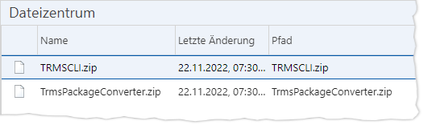

„TrmsCli“:
Kommandozeilenprogramm, mit dem einige Funktionen des TRMS automatisiert werden
können [Link].
„TrmsCli“:
Kommandozeilenprogramm, mit dem einige Funktionen des TRMS automatisiert werden
können [Link].Zusammenhänge
Für das TRMS stehen zwei Hilfswerkzeuge zur Verfügung:
„TrmsCli“:
Kommandozeilenprogramm, mit dem einige Funktionen des TRMS automatisiert werden
können [Link].
„TrmsPackageConverter“:
Kommandozeilenprogramm zum Migrieren von Paketen, die mit früheren
TRMS-Versionen erstellt wurden. Für manche Artefakte kann es nach einem
Versionssprung erforderlich sein, Zusatzdaten in Paketen zu ergänzen bzw. die
Paketstruktur anzupassen, damit diese in neueren IKAROS-Versionen eingespielt
werden können. Falls ein Transport wegen einer veralteten Paketstruktur
scheitert, finden Sie eine entsprechende Meldung mit Verweis auf den
„TrmsPackageConverter“ im Transportprotokoll.
Diese beiden Werkzeuge können direkt im TRMS im Menüpunkt „Dateisystem“ als Zip-Archive heruntergeladen werden.
Spezielle Rechte: Der Aufruf des Menüpunkts [Administration -> Dateizentrum] erfordert keine speziellen Rechte. Jeder Nutzer, der das TRMS aufrufen kann, sieht auch den Menüpunkt [Administration -> Dateizentrum] und kann die beiden Hilfswerkzeuge herunterladen.
Die Listenansicht
Im TRMS finden Sie unter „Administration“ den Menüpunkt „Dateizentrum“.

Abb. 43: Menüpunkt „Dateizentrum“ im TRMS
Schaltflächen
|
Symbol |
Schaltfläche |
Beschreibung |
|
|
„Herunterladen“ [Strg] + [S] |
Startet den Download der gewählten Datei(en) im Webbrowser. Wenn mehrere Dateien markiert sind, werden sie dann auf dem Server in eine gemeinsame „.zip“-Datei verpackt und als „Download.zip“ heruntergeladen. Nur aktiviert, wenn eine Datei markiert ist. |